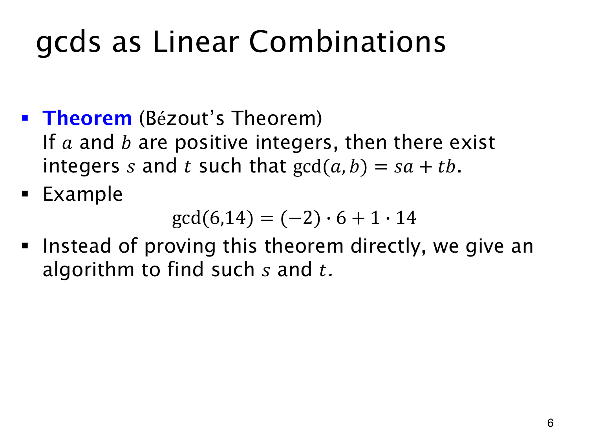

L1.13 · 第 6 页讲解原文
查看这一页课件

用两个数的整数倍拼出 GCD
6,14 的最大公约数是 2，而
2=(−2)⋅6+1⋅14.
这里系数 −2 必不可少；若只许非负系数，就无法用 6,14 组成正数 2。
Bézout’s Theorem（贝祖定理）说，对任意正整数 a,b，总存在整数 s,t 使
gcd(a,b)=sa+tb.
此前只知道公约数整除每个整数线性组合，现在还保证某个组合恰好等于 GCD。
存在这样的系数，不表示系数唯一。若 d=gcd(a,b)=sa+tb，则对任意整数 k，改用 s+k(b/d) 与 t−k(a/d)，增加的两项相互抵消，仍得到 d。
系数也能算出来。欧几里得算法的每个余数都是前两数的整数线性组合，将关系反向代回，就把最后的 GCD 写成最初两个输入的组合。课件用这个构造算法来说明定理。